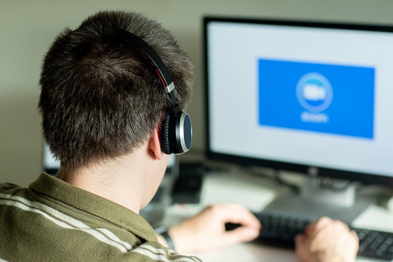

Самой востребованной платформой для онлайн-конференций в последние годы, безусловно, является Zoom. Разработка программы началась в 2013 году, когда программное обеспечение для проведения онлайн-мероприятий еще нельзя было назвать массовым продуктом. Это было нишевое решение для бизнеса, но в 2020 году ситуация резко изменилась. Сегодня продукт не нуждается в рекламе, т.к. имеет более 500 млн. скачиваний только на Google Play.
Что такое Zoom и для чего используется
Это специализированный сервис для проведения онлайн-мероприятий, таких как:
- онлайн-конференции;
- онлайн-уроки;
- веб-семинары;
- собрания.
Сервисом можно пользоваться через приложение-клиент и просто через браузер, однако последний вариант не пользуется особой популярностью. Zoom предоставляет широкие возможности для видеосвязи, с его помощью можно общаться с кем-то из друзей, а можно провести онлайн-занятие на несколько сотен слушателей.
{kind=link}
Многие мессенджеры сегодня предоставляют возможности для видео и конференцсвязи, но именно Zoom был разработан специально для этих целей. Настройки программы шире чем в обычном мессенджере, сам сервис нетребователен к качеству интернет соединения, приложение установится на любые платформы и откроется даже при забитой оперативной памяти.
Zoom также позволяет хранить и управлять записями конференций, транслировать на ютуб и в соцсети, модерировать. Особенно активно Zoom используется для обучения школьников и студентов онлайн в условиях карантина и для удаленной работы. С помощью Zoom проводятся онлайн-курсы, мастер-классы, прямые эфиры, педсоветы, родительские собрания и множество других мероприятий.
Появление Zoom и первые проблемы
Сервис Zoom был создан в 2013 году. К 2015 году проект привлек 30 млн. долларов инвестиций, а уже к 2017 году его стоимость оценивалась в 1 млрд. долларов. Как и сегодня, основной задачей Zoom было создание удобных инструментов для проведения онлайн конференций. Автор Zoom – Эрик Юань использовал платформу для переговоров с инвесторами, демонстрируя таким образом ее возможности.
Скандал со сквозным шифрованием
В компании неоднократно заявляли, что Zoom поддерживает сквозное шифрование. Это означает, что никто не может просматривать конференции пользователей, даже сами разработчики приложения. Однако журнал The Intercept опубликовал расследование, доказывающее, что термин «сквозное шифрование» в Zoom понимают не совсем в общепринятом смысле. В материалах статьи говорится, что информация на самом деле доступна разработчику и теоретически может быть передана третьим лицам, например, по требованию властей.
Передача персональных данных в Facebook
Достоверно известно об утечке данных через приложение Zoom для iOS. Такие сведения о пользователе как тип устройства, географическое местоположение, часовой пояс и оператор связи передавались в Facebook. Это происходило даже в том случае, если пользователь Zoom не имел учетной записи Facebook. В официальном заявлении Zoom говорится, что это следствие ошибки при интеграции приложения с Facebook, которая уже устранена.
Прочие уязвимости
Баги приложения периодически становятся предметом скандалов и обсуждений. Известны случаи принудительного подключения к эфирам, управления микрофонами и веб-камерами пользователей, кражи записей видеозвонков, почтовых адресов и фотографий. Разработчики стараются устранять возникающие проблемы, но из-за взрывного роста числа пользователей с каждым месяцем в период карантина им не всегда удается делать это своевременно.
Возможности Zoom

Интересные дополнительные возможности и настройки программы являются ее главным козырем в борьбе за лояльность пользователей. За это Zoom-у прощаются баги, проблемы с приватностью и неоднозначная репутация. Программа позволяет:
- проводить групповые конференции бесплатно (до 40 минут с возможностью пересоздать сколько угодно раз);
- бесплатно созваниваться по видеосвязи двум людям без ограничения по времени;
- устанавливать звуковой сигнал для входящих сообщений;
- записать отдельный аудиофайл для каждого лектора;
- показать время и дату трансляции;
- свернуть приложение не прерывая связи;
- переключаться между режимом окна и полноэкранным;
- устанавливать пароль на подключение к конференции;
- демонстрировать экран и комментировать в процессе;
- совместно формировать доску сообщений;
- переписываться с участниками в режимах группового чата и личных сообщений, не отрываясь от конференции;
- синхронизировать сервис с Microsoft Office 365, Microsoft Exchange Server и Google Календарем;
- отображать время и часовой пояс;
- работать с программой на любом из 10 доступных языков;
- устанавливать изображение профиля;
- обмениваться файлами;
- открывать и закрывать доступ к конференции до и после запуска;
- модерировать отображение видео участников;
- пользоваться «реакциями» (аплодисменты, согласие, несогласие и т.д.), не включая микрофон или видео;
- подключаться к конференции с выключенным микрофоном или видео;
- запрещать или разрешать участникам повторное подключение;
- разбивать общую сессию на «залы» для обсуждений в группах с настройкой автоматического возвращения в общую сессию через заданное время;
- транслировать изображение всего экрана или отдельного окна;
- передавать права организатора или соорганизатора другим участникам;
- позволить другим пользователям управлять вашей камерой;
- включить виртуальный фон;
- включить автозапуск программы;
- выходить только по подтверждению;
- отображать время соединения участника;
- показывать на основном экране только тех участников с активными камерами;
- работать в полноэкранном режиме;
- временно отключать аудио;
- использовать звуковые сигналы уведомлений;
- показывать превью ссылок.
Полезные возможности для учителей
{kind=link}
- В назначенный день учитель и ученики выходят на связь;
- учитель планирует урок на определенное время и заранее высылает ссылку ученикам;
- учитель включает микрофоны ученикам по мере надобности, слушает их ответы, дает возможность участвовать в обсуждениях;
- учеников можно разделить по группам и выделить время для групповой работы;
- урок можно записать и выслать запись ученикам или родителям;
- в чат можно отправить ссылки для работы с другими сервисами;
- можно блокировать учеников, которые мешают остальным.
Преимущества и недостатки программы
У Zoom достаточно как положительных, так и отрицательных сторон, но так как у сервиса практически нет конкурентов по функциональности, на минусы часто закрывают глаза. К счастью, компания непрерывно работает над ошибками, ситуация постепенно улучшается.
Плюсы
- В конференции могут участвовать до 1000 человек;
- Подключение с регистрацией и без;
- есть приложение для мобильных платформ;
- есть веб-версия для подключения через браузер;
- сохраняйте историю чатов;
- записывайте встречу в облако или на компьютер в аудио и видео версиях;
- с помощью гугл-календаря планируйте мероприятие;
- добавляйте субтитры;
- используйте автоответ для чатов;
- выбирайте устройства вывода звука – динамики или наушники;
- ограничивайте и разрешайте доступ по своему усмотрению;
- получайте важные сообщения на почту;
- настройте email-рассылку уведомлений на случай отмены конференции;
- проверяйте видео и звук перед началом эфира;
- работайте с программой на нескольких мониторах;
- включите автоматическую загрузку ссылки в буфер обмена для быстрой рассылки приглашений в мессенджеры;
- настройте рассылку напоминаний о начале конференции;
- транслируйте эфир в HD качестве;
- закрепляйте вид докладчика и подсвечивайте имена участников;
- меняйте интерфейс так, как удобно вам, от цвета панели до отображения сообщений;
- модерируйте, блокируйте нежелательных участников;
- отключайте микрофоны у всех, кроме докладчиков, устанавливайте возможность самостоятельного включения;
- работайте с приложением с помощью горячих клавиш.
Минусы
- Настроек слишком много, неопытный пользователь легко запутается;
- нет возможности пользоваться платными функциями по единоразовому платежу, необходимо оформить месячную подписку;
- сброс конференции через каждые 40 минут в бесплатной версии;
- неудобный планировщик для российских пользователей: воскресенье – рабочий день, нельзя поменять формат отображения времени (am/pm);
- периодические утечки данных и проблемы с конфиденциальностью видеозвонков;
- приложения для ПК и смартфонов настраиваются по-разному;
- в России нет офиса компании.
Начало работы
Самое сложное – регистрация учетной записи. Этот шаг можно не проходить, т.к. доступны авторизация через соцсети и участие без регистрации или авторизации. Но для максимального удобства работы с Zoom, особенно если вы не участник, а организатор встреч, рекомендуем пройти регистрацию через почту.
Незарегистрированные пользователи могут присоединяться к конференциям. Но иногда админы запрещают доступ без авторизации, чтобы повысить безопасность.
Создаем учетную запись Зум за 7 шагов - подробная инструкция
- Откройте страницу zoom.us, нажмите на оранжевую кнопку регистрации в правом верхнем углу;
- введите проверочные данные (система их не сохраняет);
- введите адрес электронной почты или авторизуйтесь через соцсети (рекомендуем зарегистрироваться через почту);
- проверьте почту, активируйте учетную запись и нажмите на синюю кнопку «войти в систему» в письме подтверждения;
- заполните стандартную анкету регистрации;
- в следующем окне можно указать адреса друзей, чтобы им на почту пришло приглашение присоединиться к Zoom (если не хотите, жмите на кнопку «пропустить этот шаг»);
- система предлагает вам начать тестовую конференцию по персональной ссылке, вы можете начать ее сразу или перейти к заполнению учетной записи.
{kind=link}
{kind=link}
{kind=link}
{kind=link}
{kind=link}
{kind=link}
{kind=link}
Устанавливаем на ПК или ноутбук
- Скачайте десктопную версию по ссылке zoom.us/support/download;
- после установки нажмите «войти в», чтобы авторизоваться с вашей учетной записью, через соцсети или зарегистрировать новую;
- готово, можете создать свою первую конференцию.
{kind=link}
{kind=link}
{kind=link}
Устанавливаем на смартфон или планшет
{kind=link}
{kind=link}
Как настроить Zoom для работы
Значок настроек в десктопном приложении находится в правом верхнем углу, а в мобильном – в правом нижнем.
Общие настройки
Выставлены по умолчанию в стандартном варианте. Рекомендуется менять, если какой-то из пунктов добавит вам комфорта при работе с программой.
{kind=link}
Видео
{kind=link}
Звук
Здесь можно проверить наличие звука, громкость, отрегулировать шумоподавление. Можно отключить автоматическую регулировку громкости (установлена по умолчанию).
{kind=link}
Чат
Этот раздел касается отображения сообщений и вашего статуса (в сети, нет на месте). Здесь же включаются/отключаются всплывающие уведомления.
{kind=link}
Контакты
Добавляйте своих друзей и знакомых в список контактов, чтобы планировать конференции. Для этого нужно добавить их email-адреса и разделить по группам.
{kind=link}
Как подключить звук в Zoom на телефоне
В нижнем левом углу экрана есть значок наушников со стрелкой «подключить звук». После тапа на него появится всплывающая панель «Wi-Fi или отправка данных сотовой сети». Нажмите на нее, тогда значок наушников в левом углу превратится в значок микрофона, вы при этом получите системное уведомление «вы используете аудиоустройство». С этого момента вы начнете слышать участников конференции и получите возможность управлять микрофоном (если такая возможность не заблокирована организатором). Чтобы включить или выключить звук, тапайте по значку микрофона внизу слева.
{kind=link}
Если звука все равно нет, возможно, вам нужно настроить разрешения для приложения Zoom в настройках телефона.
Как настроить конференцию в Zoom
{kind=link}
У конференций Zoom множество настроек. Поговорим подробнее о самых базовых, позволяющих любому пользователю запускать и успешно проводить совещания.
Создайте
Это можно сделать в любой версии Zoom, с телефона и с компьютера. Авторизуйтесь, перейдите в личный кабинет и зайдите в меню «организовать конференцию». Выберите тип конференции из трех вариантов:
- с видео;
- без видео (только аудио);
- только демонстрация экрана.
{kind=link}
Пригласите участников
В разделе «управлять участниками» нажмите на кнопку «пригласить». Далее из списка контактов нужно выбрать участников, им на электронную почту будет выслано приглашение. Не забудьте «принять» подключающихся к конференции пользователей.
{kind=link}
Настройте сессионные залы
Сессионные залы позволяют участникам разбиваться на группы. Это удобно, например, если семинар предполагает работу в малых группах (1-5 человек). Можно установить таймер и через заданное время все сессионные залы закроются, а участники будут возвращены в общую комнату. Чтобы настроить залы, перейдите на сайт zoom.us, залогиньтесь и перейдите в личный кабинет. Выберите «настройки» -> «конференция» -> «на конференции (расширенные)». Включите залы и сохраните изменения.
{kind=link}
Разрешите демонстрацию экрана
Демонстрация экрана доступна с любого устройства, с помощью этой функции можно транслировать происходящее на экране как в полноэкранном режиме (когда видно весь экран), так и в режиме окна. Доступно совместное использование звука (например, если вы включаете аудиоплеер, звук тоже транслируется), также можно комментировать демонстрацию голосом. Включить можно в разделе «демонстрация экрана».
{kind=link}
Как запланировать конференцию
- Нажмите кнопку «запланировать»;
- Укажите тему конференции;
- укажите необходимые данные – дату и время старта, длительность, временную зону;
- выберите идентификатор (PMI), он может быть ваш персональный или уникальный;
- проверьте настройки безовасности: система автоматически устанавливает пароль на новые конференции, он рассылается участникам в приглашениях, его можно поменять или отключить;
- настройте видео;
- настройте звук;
- нажмите кнопку «запланировать».
{kind=link}
Как отредактировать конференцию
Любые настройки конференции можно изменить в любой момент. Для этого нажмите кнопку «изменить», отредактируйте и сохраните изменения. Вы также можете удалить конференцию, воспользовавшись соответствующей кнопкой.
{kind=link}
Удаленные конференции могут быть восстановлены в течение недели после удаления. Для этого в личном кабинете перейдите в папку «недавно удаленные».
Как подключиться к чужой конференции
Нужно кликнуть по ссылке-приглашению, система предложит запустить приложение. Если вы подключаетесь с ПК, можно обойтись без приложения, подключиться с помощью веб-версии Zoom.
{kind=link}
Как сделать конференцию на телефоне
- Нажмите кнопку «новая конференция»;
- выберите статус видео (вкл или выкл);
- выберите идентификатор;
- нажмите «начать конференцию».
{kind=link}
Как выйти из Zoom
Разлогиниться и закрыть Zoom можно несколькими способами – через трей, через интерфейс программы или с официального сайта (выход на всех устройствах). Ниже приведены данные для ПК (Windows) и смартфонов (Android). Для продуктов Apple могут быть несущественные отличия в названии кнопок и расположении (например, трей в верхней части экрана, а не в нижней), но последовательность действий та же самая.
- Через иконку в трее на ПК. Кликните правой кнопкой мыши по иконке в трее, выберите «выйти из системы», чтобы выйти из профиля, или «выход», чтобы закрыть программу.
- Через интерфейс приложения на ПК. Кликните по иконке вашего профиля в правом верхнем углу и нажмите «выход», чтобы выйти из учетной записи. Затем закройте программу через «Х» в правом верхнем углу окна.
- Из учетной записи на смартфоне. Нужно тапнуть по кнопке «настройки» в правом нижнем углу экрана смартфона, затем нажать на кнопку «выйти из системы» и подтвердить действие.
- Cразу на всех устройствах. Зайдите в аккаунт на сайте zoom.us, нажмите на ссылку «выйти из системы для всех устройств».
Особенности работы в мобильном приложении
Мобильное приложение Zoom не является полной заменой десктопной версии, хотя и предоставляет основной функционал. Если вы просто хотите участвовать, смотреть эфиры, вступать в обсуждения – мобильной версии будет достаточно. Но для ведущего эфиров наилучшим вариантом будет десктопное приложение для ПК. Мобильным клиентом можно пользоваться в крайнем случае и быть готовым к отсутствию некоторых очень важных возможностей.
- нельзя включить запись конференции с мобильного приложения на бесплатном тарифе;
- нет функции трансляции в соцсети;
- нельзя использовать сессионные залы;
- функция демонстрации экрана на телефоне довольно неудобна.
Если провести встречу с телефона все же очень нужно, есть выход. Вы можете заранее договориться с участником, у которого есть ПК или ноутбук и передать ему права организатора или соорганизатора в процессе конференции. Он сможет вместо вас ставить на запись, демонстрировать важные документы со своего экрана, транслировать в соцсети и разбивать участников по сессионным залам. Вы при этом останетесь полноправным ведущим конференции, но будете время от времени сообщать напарнику, что нужно сделать.
Конференции и вебинары в Zoom
Конференция и вебинар в Zoom, это две разные платформы, отличающиеся по ряду возможностей.
Конференции
Это формат интерактивной встречи, в которой все являются участниками. Для конференции существует три роли – организатор, соорганизатор, участник. Все видят общий экран, список участников и могут управлять своими звуком и видеоизображением. Конференции бывают:
- Мгновенные. Участники договорились встретиться, один из них создает конференцию, высылает приглашения и встреча начинается.
- Запланированные. Конференции проводятся регулярно по расписанию (например, онлайн-уроки). Даты, время, темы, настройки конференции выставлены заранее, участники приглашены заранее.
Вебинары
Вебинары – это мероприятия с большим числом участником и ограниченной интерактивностью. Ролей становится больше – организатор, соорганизатор, докладчик, слушающий. Участниками являются не все, большинство – слушающие, не имеющие возможности управлять своим микрофоном самостоятельно (только по решению организатора). Отличия вебинаров от конференций таковы:
- нет общения в визуальном режиме между слушателем и докладчиками;
- максимальное количество участников увеличено до 10 000;
- вебинары недоступны в бесплатном режиме, только по подписке.
Информация для преподавателей и спикеров
Zoom предоставляет возможности проводить онлайн-уроки и семинары, это делает популярным среди преподавателей и спикеров по всему миру. Приводим несколько советов, как пользоваться Zoom для преподавания, на что обратить внимания, какие настройки использовать, по каким схемам проводить уроки.
Рекомендации
{kind=link}
- Не читайте текст со слайдов. Есть функция демонстрации экрана, благодаря которой участники сами могут прочесть текст.
- Используйте наглядные материалы – изображения, графики, таблицы. Разнообразие способствует вовлечению слушателей и не дает им ослаблять внимание.
- Структурируйте подачу информации. Выделяйте логические блоки, объявляйте смену тем, подавайте материал последовательно.
- Избегайте резких движений, но не будьте монотонны. Изображение иногда передается с задержкой, поэтому в кадре лучше избегать лишней жестикуляции. Но монотонное чтение плохо воспринимается аудиторией, старайтесь говорить живо.
- Используйте анимацию. Анимированные слайды привлекательны и могут добавить вебинару разнообразия.
- Предлагайте слушателям действовать самостоятельно. Открыть ссылку на таблицу, найти в поисковике ответ на вопрос, слово и т.д. Активность помогает поддерживать тонус.
Лайфхаки
В настройках видео можно воспользоваться ползунком «подправить мой внешний вид». Эта настройка дает небольшое размытие, которое сглаживает морщины и другие дефекты внешности. Но не увлекайтесь, если размытие будет слишком сильным, ваше лицо может стать расплывчатым пятном.
Обязательно включите режим HD в настройках видео. Без этой галочки качество будет низким даже с хорошей веб-камерой.
Как преподавать с помощью Zoom
{kind=link}
- Синхронное преподавание – это полный аналог занятия в классе. Учитель объясняет тему, студенты слушают и задают вопросы.
- Асинхронное преподавание – занятие по итогам урока. Вы заранее записали урок с помощью Zoom, выслали его студентам и дали задание. Когда вам прислали готовые задания, вы проводите консультации индивидуально: открываете работу студента у себя, включаете демонстрацию экрана и разбираете ошибки.
- Проектная работа – это работа студентов в группах. Студенты созваниваются в Zoom и вместе работают над проектом. Когда проект готов, к группе присоединяется преподаватель и проводит разбор итогов, дает свои комментарии.
Тарифные планы Zoom: какой выбрать
Zoom предлагает один бесплатный тариф, два фиксированных и один гибкий. Для собственного пользования достаточно бесплатных возможностей программы, для онлайн-обучения или небольшого бизнеса подойдет профессиональный. Для крупных компаний с большим штатом сотрудников можно приобрести тариф «предприятие».
{kind=link}
Бесплатный пакет
Подойдет для собственного использования. В него входит:
- безлимитные видеозвонки 1 на 1, без ограничений по продолжительности и по количеству звонков в день;
- неограниченные по количеству групповые видеоконференции до 100 человек, есть ограничение по продолжительности (до 40 минут);
- поддержка видео в высоком качестве (HD).
- демонстрация экрана одного или нескольких участников одновременно;
- переписка в чате и личные сообщения;
- возможность записывать конференции и хранить записи;
- доска сообщений и совместный доступ к ней.
Профессиональный пакет
Для конференций до 100 человек, подписка стоит 150$ в год. Возможности:
- безлимитные по продолжительности конференции до 100 человек;
- неограниченное число групповых созвонов;
- прямая трансляция в соцсети;
- доступ к вебинарам;
- 1 ГБ облачной памяти для хранения записей;
- длительность трансляций увеличена до 24 часов.
Бизнес-пакет
Стоимость подписки 200$ в год. Возможности:
- безлимитные конференции до 300 человек;
- система единого входа;
- расшифровка записей из облака;
- красивый адрес URL;
- выделенная линия для связи с поддержкой.
Пакет «Предприятие»
Подключается в отделе продаж компании, нет фиксированной цены, но она всегда выше стоимости предыдущего пакета. Возможности:
- безлимитные конференции на 500-1000 человек (в зависимости от тарифа);
- хранить записи в облаке можно без ограничений;
- персональный менеджер по работе с клиентами;
- расшифровка записей.
Что лучше – Zoom или Skype
Skype популярен, предустановлен на миллионах компьютеров и понятен пользователям. В Skype нет лимита по времени созвона. К недостаткам Skype можно отнести не всегда стабильное соединение, расход оперативной памяти устройства, невозможность демонстрировать экран выборочно (по окнам).
Zoom – программа сравнительно новая, с ней нужно тщательно разбираться в виду большого количества настроек, она не предустанавливается на устройства. Zoom необходимо оплачивать, чтобы снять ограничение по длительности конференции. Среди достоинств программы можно отметить низкое потребление оперативной памяти при устойчивом соединении, широкие возможности для презентации – демонстрацию экрана по окнам и виртуальную доску, на которой можно писать мышкой, трансляцию экрана через мобильное приложение.
Skype изначально является инструментов связи, а Zoom – инструментом организации онлайн-мероприятий, эта разница между ними весьма заметна. Если вы хотите просто созвониться с друзьями, чтобы обсудить поездку за город на выходных, Skype предпочтительнее, т.к. не ограничивает ваш созвон по времени, а сложные настройки вам не пригодятся и так. Если же у вас в планах серьезная деловая онлайн-встреча или вы ведете обучение в интернете, лучше приобрести подписку Zoom.
Заключение
Несмотря на неоднозначную репутацию и ряд скандалов, пользователи по-прежнему отдают предпочтение Zoom из-за широких настроек и возможностей. Популярные мессенджеры постепенно внедряют аналогичный функционал, но все без исключений отстают от Zoom на несколько лет. Пользоваться Zoom или нет – каждый решает для себя, это зависит от требований к конфиденциальности данных, потребностей компании и личных предпочтений пользователя.
Оставить комментарий
Войти с помощью